CILLUM AUTE
Seit Jahrhunderten prägen Gletscher die Landschaft vieler Gebirgsregionen und dienen als grosser Wasserspeicher in Form von Eis. Dieses unveränderlich wirkende Bild verändert sich aber tatsächlich. Weltweit verlieren Gletscher immer schneller an Masse. Der wichtigste Treiber hierbei ist die steigende Temperatur. Wärmere Sommer lassen mehr Eis schmelzen, während schneearme Winter dafür sorgen, dass weniger Schnee nachkommt und sich neues Eis bilden kann. Die Folgen sind inzwischen weltweit messbar. Gletscher sind dabei mehr als gefrorene Landschaft. Sie wirken als natürliche Wasserspeicher und geben in den warmen Monaten Schmelzwasser an Flüsse ab. Gleichzeitig hat ihr Rückgang Auswirkungen auf den Meeresspiegel: Wenn Gletschereis an Land schmilzt, gelangt zusätzliches Wasser in die Ozeane.